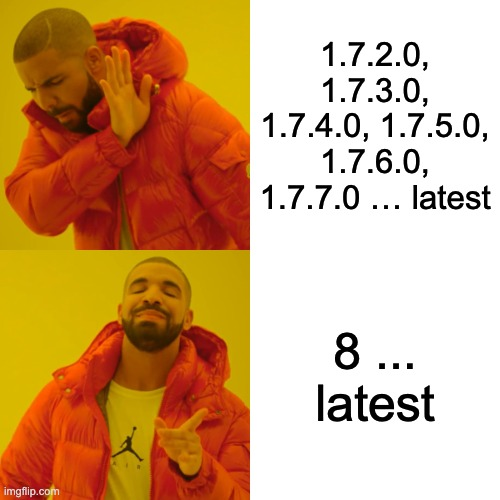
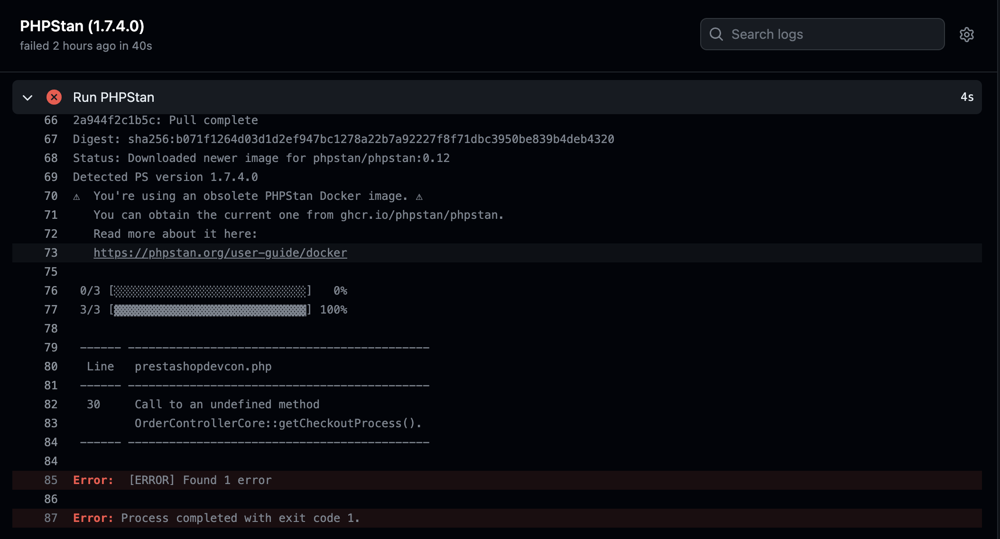

Module development techniques I wish I would use
Agenda
- Tools
-
- Docker for local setup
- PHPStan
- Testing
-
- Integration tests
- e2e tests
- Reusability
-
- Composer packages
- Web components
When we start working with modules
To the rescue!
Using docker for local PrestaShop development benefits
- Easily switch between PrestaShop versions
- There are no problems to run old PrestaShop (with php 5.6 lets say)
-
You can run tests and other tools for same environments
PHPStan
Find bugs before they reach production!
public function hookDisplayCheckoutSummaryTop()
{
$text = "";
if ($this->context->controller instanceof OrderControllerCore) {
$checkoutProcess = $this->context->controller->getCheckoutProcess();
$text .= "We are currently at step: " . $checkoutProcess->getCurrentStep()->getTitle();
}
return $text;
}
1. PHPStan CI setup
name: PHP lint
on: [pull_request]
jobs:
# Run PHPStan against the module and a PrestaShop release
phpstan:
name: PHPStan
runs-on: ubuntu-latest
strategy:
matrix:
presta-versions: ['1.7.4.0', 'latest']
steps:
- name: Checkout
uses: actions/checkout@v2.0.0
# Add vendor folder in cache to make next builds faster
- name: Cache vendor folder
uses: actions/cache@v1
with:
path: vendor
key: php-${{ hashFiles('composer.lock') }}
# Add composer local folder in cache to make next builds faster
- name: Cache composer folder
uses: actions/cache@v1
with:
path: ~/.composer/cache
key: php-composer-cache
- run: composer install --ignore-platform-reqs
# Docker images prestashop/prestashop may be used, even if the shop remains uninstalled
- name: Pull PrestaShop files (Tag ${{ matrix.presta-versions }})
run: docker run -tid --rm -v ps-volume:/var/www/html --name temp-ps prestashop/prestashop:${{ matrix.presta-versions }}
# Run a container for PHPStan, having access to the module content and PrestaShop sources.
# This tool is outside the composer.json because of the compatibility with PHP 5.6
- name : Run PHPStan
run: docker run --rm --volumes-from temp-ps -v $PWD:/web/module -e _PS_ROOT_DIR_=/var/www/html --workdir=/web/module phpstan/phpstan:0.12 analyse --configuration=/web/module/tests/phpstan/phpstan-base.neon
2. Neon file
includes:
- %currentWorkingDirectory%/vendor/prestashop/php-dev-tools/phpstan/ps-module-extension.neon
parameters:
paths:
# From PHPStan 0.12, paths to check are relative to the neon file
- ../../controllers
- ../../src
- ../../prestashopdevcon.php
level: 2
reportUnmatchedIgnoredErrors: false
3. Composer.json
{
"name": "invertus/prestashopdevcon",
"autoload": {
"psr-4": {
"Invertus\\Prestashopdevcon\\": "src/"
},
"classmap": [
"src/",
"prestashopdevcon.php",
"controllers"
]
},
"config": {
"platform": {
"php": "5.6.0"
},
"sort-packages": true,
"preferred-install": "dist",
"optimize-autoloader": true,
"prepend-autoloader": false
},
"authors": [
{
"name": "Tomas",
"email": "tomas.ilginis@invertus.eu"
}
],
"require": {},
"require-dev": {
"prestashop/php-dev-tools": "~3.0"
}
}
And the final result
Testing
Integration tests
- It's a type of software testing in which the different units, modules or components of a software application are tested as a combined entity
- In integration tests usually some parts are mocked. Most comonly,its a 3rd party API's the tests have no control of.
E2E testing
Is a way to make sure that applications behave as expected and that the flow of data is maintained for all kinds of user tasks and processes. This type of testing approach starts from the end user’s perspective and simulates a real-world scenario
For web developers its testing web application by imitating clicks, form submits, page loads, scrolls, drags etc...
My tool of choice

Main takeaways
- Use fixtures
- On CI environment record videos and screenshots and export them as artifacts
- use data-cy attribute for your templates for easier data access
- Mock all 3rd parties. If you have javascript code communicating with 3rd party, you can use cypress mocking as well